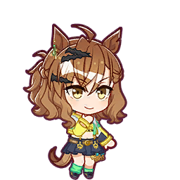

Based on current estimates from the website, uma.moe, Jungle Pocket will be added to global on October 23rd, 2027
Pokke is being added in...

[Countdown Unavailable]This website was created to provide a countdown to the estimated release date of Jungle Pocket in Umamusume Global. This website is inspired by Tannhauser.moe, a website created to provide a countdown to when Matikanetannhauser, or Mambo, gets added to Umamusume Global. Images originally by Cygames and sourced from Umamusume: Pretty Wiki. This website is not affiliated with Cygames or Umamusume.
This website was created by SaferCaneNein
For questions, feedback, suggestions, or concerns, please email support@tapatv.com